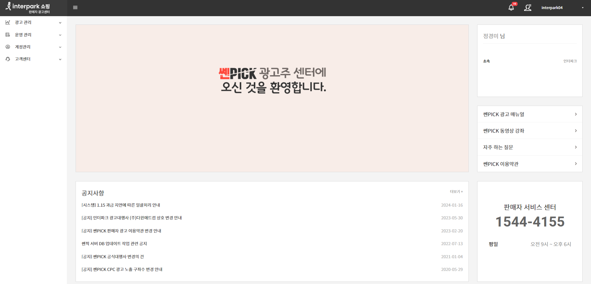
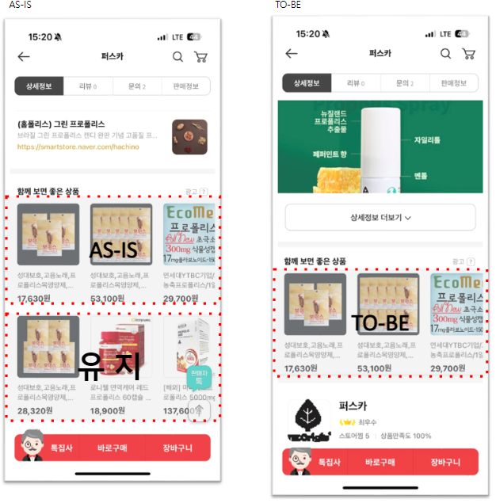

판매자 센터 구축
노코드 기술을 활용하여 빠르고 효율적으로 구축한 MAU 2만 달성 판매자 센터
프로젝트 개요
배경 및 필요성
인터파크 SRM팀에서는 판매자들이 광고, 쿠폰, 프로모션 등을 효율적으로 관리할 수 있는 통합 플랫폼이 필요했습니다. 기존 시스템은 개별적으로 분산되어 있어 판매자들의 불편함이 컸습니다.
빠른 시장 대응과 비용 효율성을 위해 노코드(No-Code) 기술을 도입하여 개발 리소스 최소화와 동시에 사용자 친화적인 인터페이스를 구현하고자 했습니다.

노코드 도구 활용
사용자 인터페이스 구성
판매자 정보 통합
워크플로우 연동
내부 도구 구축
개발 과정
요구사항 분석
판매자 인터뷰 및 기존 시스템 분석을 통한 핵심 기능 정의
노코드 도구 선정
기능 요구사항에 맞는 최적의 노코드 플랫폼 검토 및 선택
프로토타입 개발
핵심 기능 중심의 MVP(Minimum Viable Product) 구축
사용자 테스트
판매자 그룹 대상 베타 테스트 및 피드백 수집
기능 확장
피드백 반영 및 추가 기능 개발
정식 출시
전체 판매자 대상 서비스 론칭 및 운영
기존 vs 신규 시스템 비교
| 기능 | 기존 시스템 | 신규 판매자 센터 |
|---|---|---|
| 접근성 | 분산된 여러 시스템 | 통합 단일 플랫폼 |
| 광고 관리 | 수동 설정 및 관리 | 자동화된 광고 관리 |
| 쿠폰 발행 | 개별 채널별 작업 | 통합 쿠폰 관리 |
| 성과 분석 | 기본적인 통계 | 상세한 대시보드 |
| 사용자 편의성 | 복잡한 UI/UX | 직관적인 인터페이스 |
| 개발 속도 | 6-12개월 | 3개월 (노코드) |
주요 성과
노코드 기술 도입 효과
🚀 빠른 개발 및 배포
- 신속한 프로토타이핑: 아이디어에서 실제 구현까지 1-2주 단축
- 실시간 업데이트: 기능 수정 및 추가가 즉시 반영 가능
- A/B 테스트 용이: 다양한 버전을 빠르게 테스트할 수 있는 환경
💰 비용 효율성
- 개발 인력 최소화: 전문 개발자 없이도 구현 가능
- 유지보수 비용 절감: 시각적 도구로 누구나 수정 가능
- 인프라 비용 최적화: 클라우드 기반 자동 스케일링
💡 핵심 인사이트
노코드 기술을 통해 "기술보다는 비즈니스 로직에 집중"할 수 있었고, 빠른 시장 검증과 사용자 피드백 반영이 가능했습니다. 특히 스타트업이나 빠른 MVP 개발이 필요한 상황에서 노코드는 강력한 솔루션이 될 수 있다는 것을 확인했습니다.
배운 점 (Key Learnings)
🔧 기술 트렌드 적응의 중요성
노코드라는 새로운 기술 트렌드를 빠르게 학습하고 적용함으로써 프로젝트의 성공을 이끌어낼 수 있었습니다. 기술의 변화에 민감하게 반응하고 적절히 활용하는 것이 현대 PM의 핵심 역량이라는 것을 깨달았습니다.
세부 인사이트
- 사용자 중심 설계: 기술보다는 사용자 경험(UX)이 우선되어야 함
- 점진적 개선: 완벽한 시스템보다는 빠른 출시 후 지속적 개선
- 도구의 한계 인식: 노코드의 장점과 한계를 명확히 파악하여 적절한 영역에 활용
- 팀 협업 강화: 비개발자도 쉽게 참여할 수 있어 팀 전체의 기여도 향상
프로젝트 갤러리
판매자 센터 관리 화면
통합 판매자 관리 인터페이스

핵심 기능
판매자를 위한 주요 기능 화면